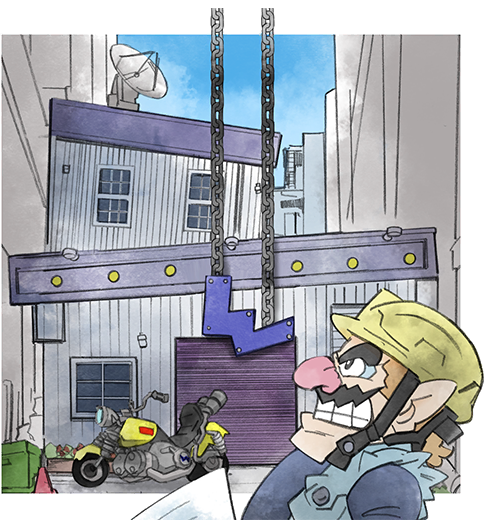

The CompanyWarioWare, Inc. is a company founded and managed by Wario and plays a central role in the WarioWare games. It is located in Diamond City, where Wario often meets with many of his friends. He and his friends develop the WarioWare games for Wario's company, including their main feature, the microgames. Despite the high success of the games, Wario usually refuses to pay his friends. |
 |